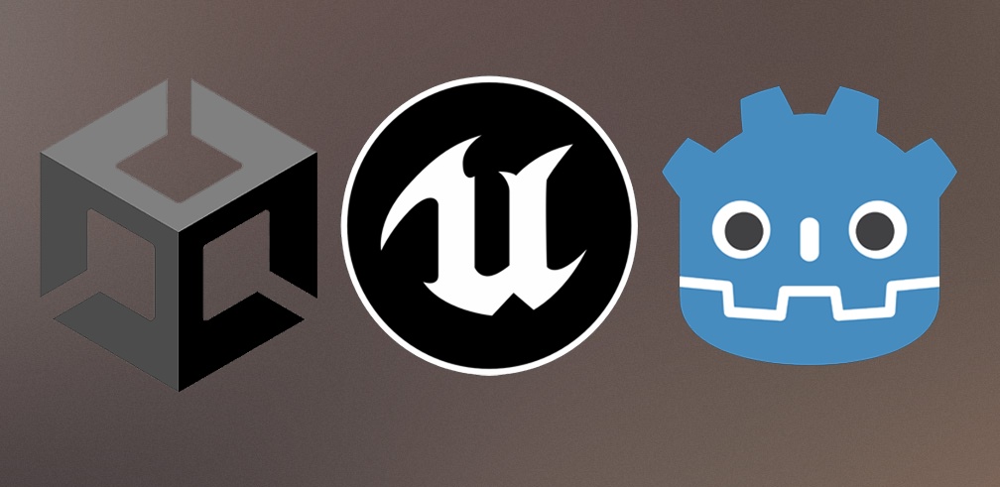
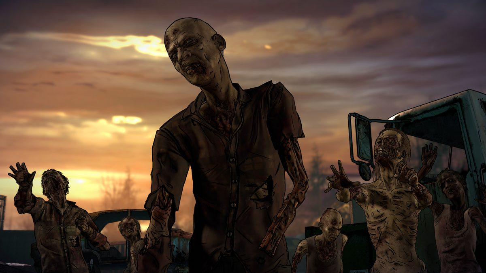
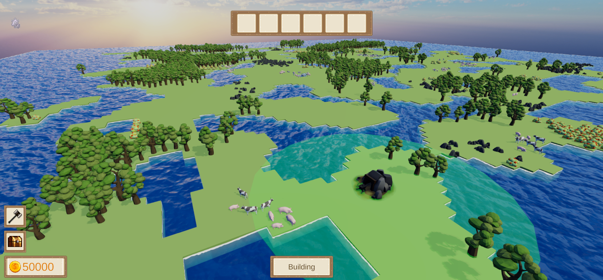
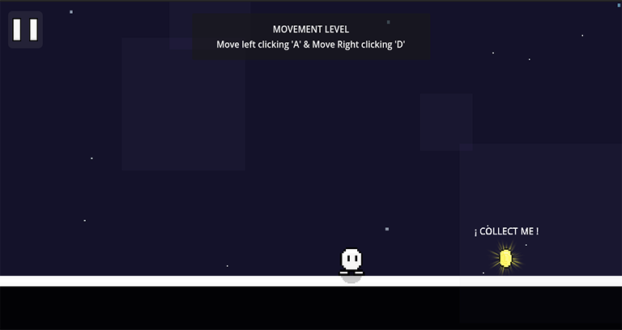
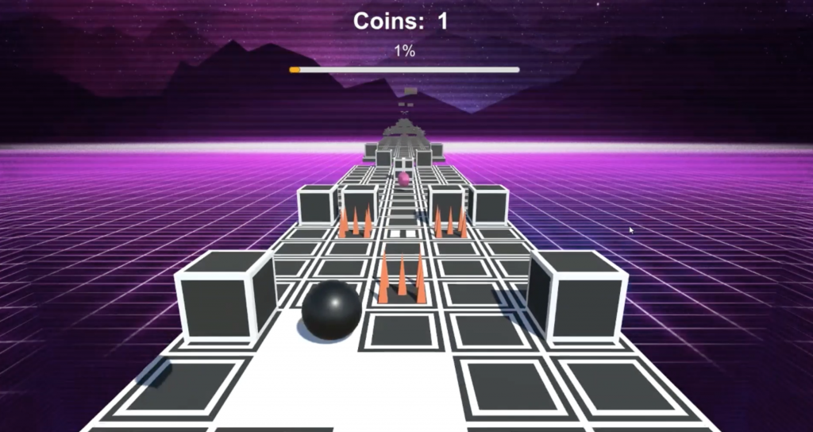
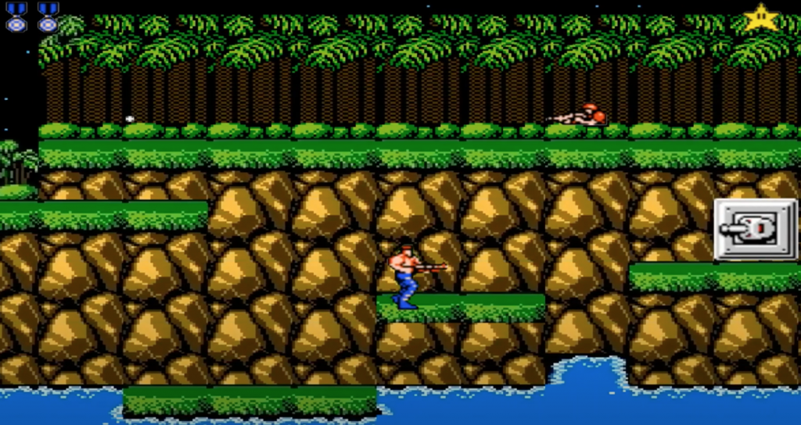

All the projects I have developed during my live
During my years of learning I have developed programming skills using different engines [Unity, Unreal Engine & Godot].
Some of these projects have been developed individually and others in a group way, I hope you like them.

Free Time - Unity
Zombies - VR

This project marked my initiation into the world of virtual reality.
It is a static shooter designed to immerse the player in a position defense experience.
In this game, players must defend their location from hordes of zombies using a variety of weapons that they can acquire throughout
the game through an economy system based on enemy elimination.
This experience not only allowed me to explore the intricacies of programming in virtual reality environments,
but also to develop skills in game design and the implementation of dynamic gameplay systems.
Free Time - Unity
SkyLand - Unity

This project is an engaging city-building game featuring resource management mechanics.
Each playthrough offers a unique experience, as the game dynamically generates the map procedurally.
Players must skillfully balance their finances and resource acquisition to earn the necessary victory points before running out of land.
It's a thrilling race against time that challenges strategic thinking and decision-making skills.
Free Time - Unreal Engine
UE Basics
Today, Unreal Engine stands at the top of the most powerful tools for game development!
For this reason, I embarked on a new adventure in this engine to learn and explore its full potential.
After speaking with several gameplay programmers, they recommended a course that thoroughly introduced all the concepts of UE5,
applying them in 5 games with different mechanics.
Free Time - Godot
Zero to Hero

I have chosen to embark on this project using Godot,
an engine that has gained significant momentum and recognition in the video game industry in recent times.
The project revolves around the development of a series of mini-games specifically designed with a very accessible learning curve,
aimed at attracting individuals who have never ventured into the world of video games.
The primary goal is to provide players with an experience that enables them to acquire both basic and advanced skills,
preparing them to successfully tackle the challenges of contemporary video games, which often feature complex and varied mechanics.
University - Unity
Rolling Sky

In the University I had to develop with a teammate our own game version of the original game Rolling Sky.
Is an arcade game, involves a ball rolling and jumping endlessly along an obstacle-ridden path.
Players move the ball back and forth with controlled swipes trying to collect gems, avoid falling off the edge, and dodge ball-shattering objects.
University - OpenGL
CONTRA

In the University I had to develop with a teammate our own game version of the original game Contra.
Is a run and gun video game, it employs a variety of playing perspectives, which include a standard side view, a pseudo-3D view
(in which the player proceeds by shooting and moving towards the background, in addition to left or right) and a fixed screen format
(in which the player has their gun aimed upwards by default).